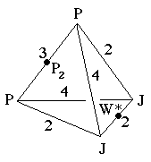
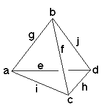

206
206
 208
208 Orbifold Atlas Home Page
Orbifold Atlas Home Page
 Crystallographic Topology Home Page
Crystallographic Topology Home Page
Underlying Topological Space: S3; Figure Pseudo-Symmetry (FPS): 2
Euclidean 3-Orbifold with Invariant-Lattice-Complex Letters
(left), Wyckoff Site Letters (right)
 
| FPS | Mult | Lattice Comp | Group Graph | Wyckoff Set | 2[4]Cover |
| 1-2 | P | 432 | a, b | ||
| 3-2 | J | 422 | c, d | ||
| 6-2 | P6[-]J2 | 32<4>22 | e:a-d, f:b-c | ||
| 8-1 | P8[P2]P8 | 42<3>42 | (g:a-b)1 | ||
| 12-1 | J4[W*]J4 | 42<2>42 | (h:d-c)2 | ||
| 12-2 | P12[-]J4 | 43<2>42 | i:a-c, j:b-d | ||
| 24 | 1 | k:efghij | |||
| 2 | 24-2 | P23[-]W*2 | 2*=33<1>22 | (k1:g-h)3, (k2:g-h)4 | #211(i) |
| 24-2 | m* | (k3:hie)5, (k4:hfj)6 | #221(k,l) | ||
| 24-1 | m* | (k5:gfiej)7 | #221(m) | ||
| Struct-Mult | Critical Points | Heegaard Surf | Wyckoff Cut | |
| Scub-1s | P/J/J/P | H322{2} | g j h i | |
| CsCl-1 | PP/P2/W*/JJ | H4242{11} | e i f j |
Lattice Points: (1) 0,0,0 + (1/4,1/4,1/4) x2; (2) 0,1/2,0 + (1/4,0,0) x2 &; (3) 1/4,1/4,1/4 + (0,1/4,-1/4); (4) 1/4,1/4,1/4 + (1/4,0,-1/4); (5) 0,y,z; (6) 1/2,y,z; (7) x,x,z
206
208
Orbifold Atlas Home Page
Crystallographic Topology Home Page
Page last revised: